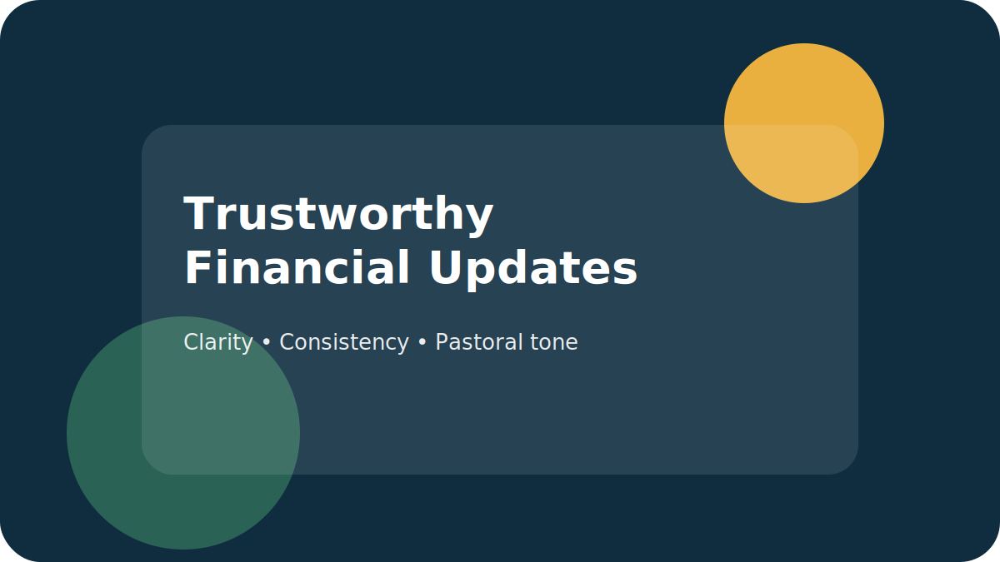

Finance
Your Giving Report Might Be Undermining Trust. Here’s How to Fix It.
Three reporting habits that quietly reduce trust, and a simple template you can copy and paste.
Clear frameworks and pastoral language you can reuse in finance meetings, elder meetings, and Sunday moments.
Articles for pastors and church leaders on generosity, stewardship, and funding church projects.
Three reporting habits that quietly reduce trust, and a simple template you can copy and paste.

HVAC, roofs, and parking lots—how to communicate need without sounding desperate.

Concrete, Compelling, Consistent, Consequences—examples + a mini checklist you can steal.

Relationship posture, vision alignment, clarity, and follow-up—without awkwardness.

What a proven process and outside guide protects: clarity, alignment, momentum, and trust.